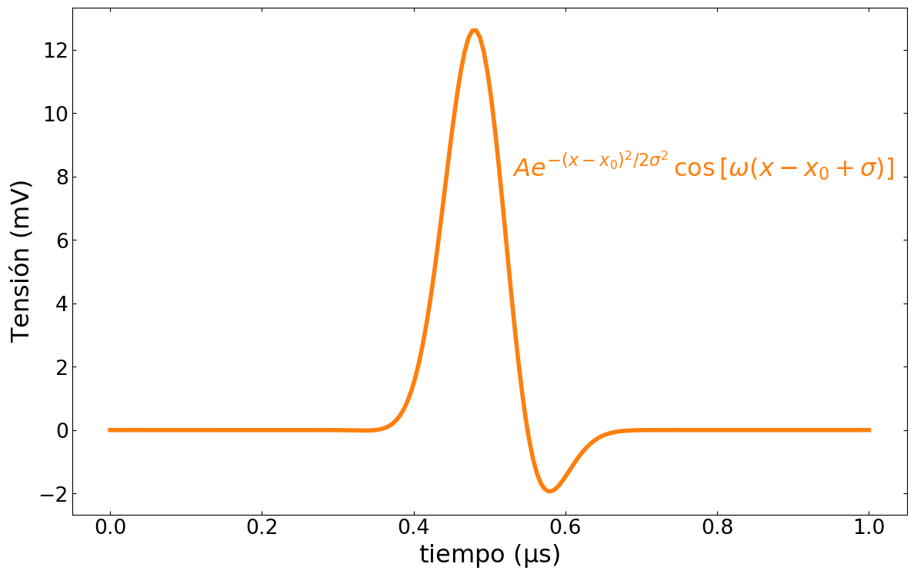
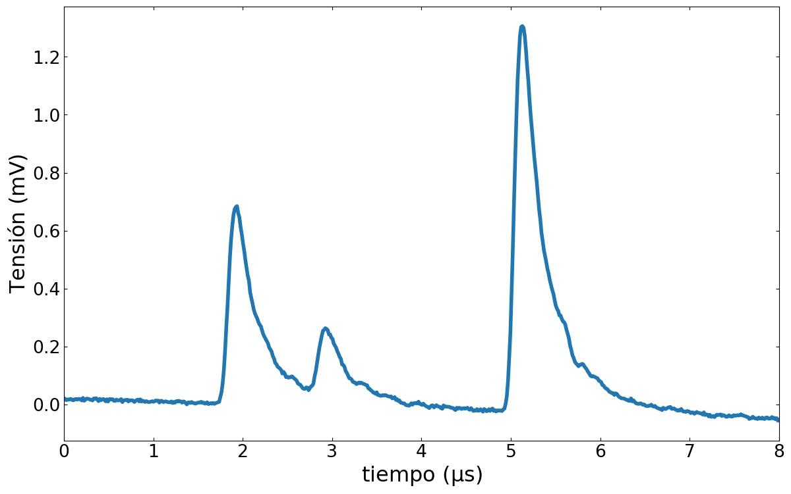

Simulación de medición y análisis de datos
Simulación de medición y análisis de datos
Definición del problema
Consideremos un experimento donde cada evento detectado produce un pulso que se registra. Como no tenemos el equipo de medición vamos a realizar una simulación del sistema y su detección
En el eje horizontal ocurre el intervalo de tiempo en que se espera la señal. A tiempos específicos el detector produce señales que se registran.
El detector produce una señal que puede modelarse con la función
\[S(t) = A e^{-(t-t_0)^2/2 \sigma^2} \, \cos\left[\omega (t-t_0 + \sigma) \right]\]
donde la constante \(A\) es tal que la integral del pulso es igual a 1.
{kind=link}
La señal modelo está caracterizada por tres parámetros: el centro \(t_0\), el ancho \(\sigma\) y la frecuencia de la oscilación \(\omega\). Cada uno de estos parámetros no va a ser exactamente igual en cada señal registrada sino que van a variar con ciertas probabilidades:
En cada intervalo de tiempo la señal puede estar formada por cero, uno o más pulsos generados por el detector como se ve en la siguiente animación
{kind=link}
Como los distintos pulsos que forman la señal corresponden a distintos eventos que pueden ocurrir en un dado intervalo de tiempo, tienen distinta probabilidad de ocurrir. Por ejemplo, en la animación anterior el pico de la izquierda tiene una probabilidad de 70% de ocurrir mientras que el pico de la derecha tiene un 60%.
En este problema se pide que se realice la simulación de este proceso de medición y el análisis posterior de los datos.
Simulación de la medición
Vamos a simular la medición, como la que se muestra en la animación anterior, considerando tres picos, localizados en tiempos \(t_{0}=1.8, 2.8, 5\). Las tres señales tienen probabilidades de ocurrir que son iguales a \(P = 0.3, 0.1, 0.6\), respectivamente.
La posición de cada pico va a estar determinada por la distribución Beta prime dada por:
\[\beta'(x)={\frac {x^{{a - 1}}(1+x)^{{-a -b}}}{B(a , b )}}\]centrada en \(t_{0}\), con parámetros \(a=4\) y \(b=2\) (ver scipy.stats.betaprime) donde \(B\) es la función distribución Beta. El ancho de la distribución de tiempos será \(\sigma_{t}= 0.15\)
El ancho \(\sigma\) del pico central varía con probabilidad dada por una distribución normal con valor medio \(\sigma_{0} = 0.05 \mu s\) e incerteza \(\sigma_{\sigma}= 0.005\).
La frecuencia de la oscilación \(\omega\) varía con probabilidad dada por una distribución normal centrada en \(\omega_{0} = 5 \pi\) (en unidades de \(1/\mu s\)), con incerteza \(\sigma_{\omega}= 0.05\).
La medición tiene un «ruido» estadístico azaroso, con distribución normal que tiene dos componentes: una absoluta y una relativa. El ruido relativo tiene un valor medio igual a 1 y un ancho igual a 0.1, y se multiplica a la señal. El ruido absoluto tiene un valor medio nulo, con ancho igual a \(0.2\) y simplemente se suma a la señal.
Todo el espectro está montado sobre un fondo lineal \(f(t) = (- t + 2)/100\)
Enunciado
Se le pide que:
Realice una animación simulando el «display» de medición como se muestra más arriba.
Escriba una rutina (función o método de un objeto) que devuelva el resultado de
Nmediciones. Grafique el promedio de esas mediciones como se muestra en la figuraObtenga los datos de promedios de 10000 mediciones para tres casos diferentes
Los picos en \(t_{0}=1.8, 2.8, 5\) tienen probabilidades de ocurrir \(P = 1, 0, 0\)
Los picos en \(t_{0}=1.8, 2.8, 5\) tienen probabilidades de ocurrir \(P = 0.8, 0.1, 0.1\)
Los picos en \(t_{0}=1.8, 2.8, 3.5\) tienen probabilidades de ocurrir \(P = 0.85, 0.1, 0.05\)
Grafique los tres casos, indicando en la figura la posición del máximo para cada pico y el ancho a altura mitad.
Utilizando los datos del inciso anterior, suponiendo que los tres picos tienen la misma forma, obtenga una estimación del área de cada pico en los tres casos mediante un ajuste por cuadrados mínimos.
{kind=link}